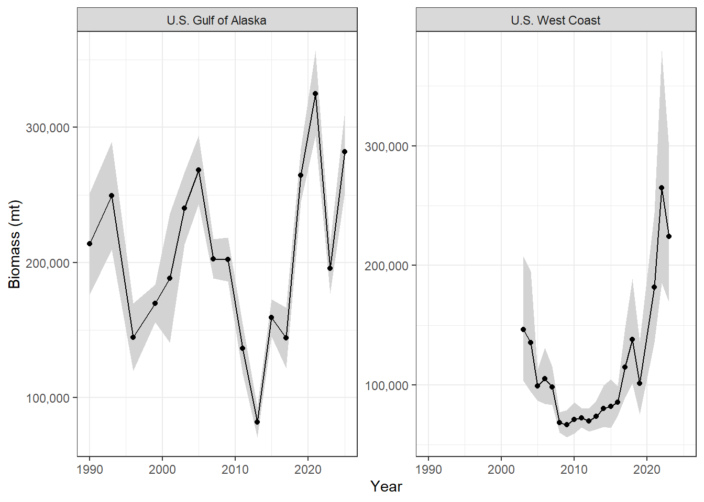
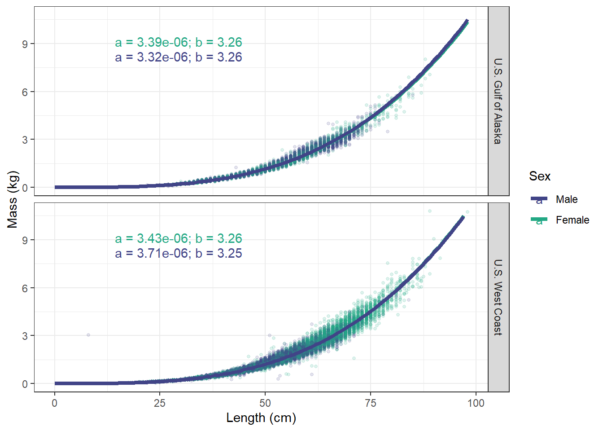
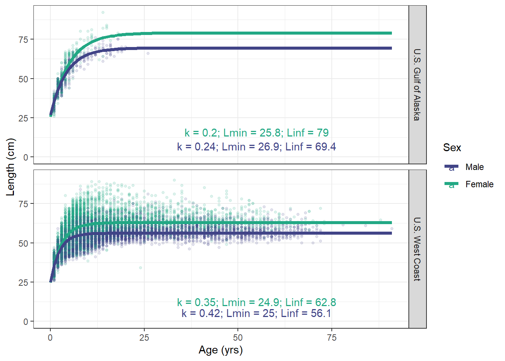

gfsynopsis-noaa
Pacific ocean perch


| Biological samples by year and region | |||
|---|---|---|---|
| Year | Length | Age | Mass |
| U.S. Gulf of Alaska | |||
| 1990 | 1,881 | 1,754 | 228 |
| 1993 | 1,406 | 1,378 | 409 |
| 1996 | 834 | 641 | 834 |
| 1999 | 878 | 855 | 878 |
| 2001 | 1,105 | 0 | 1,105 |
| 2003 | 1,335 | 985 | 1,319 |
| 2005 | 1,519 | 1,009 | 1,484 |
| 2007 | 1,186 | 1,177 | 1,186 |
| 2009 | 422 | 418 | 421 |
| 2011 | 2,388 | 794 | 2,388 |
| 2013 | 1,288 | 858 | 1,287 |
| 2015 | 1,119 | 744 | 1,119 |
| 2017 | 1,074 | 1,071 | 1,074 |
| 2019 | 1,220 | 1,214 | 1,220 |
| 2021 | 1,154 | 1,152 | 1,154 |
| 2023 | 960 | 0 | 960 |
| U.S. West Coast | |||
| 2003 | 1,426 | 432 | 371 |
| 2004 | 565 | 219 | 163 |
| 2005 | 527 | 258 | 258 |
| 2006 | 659 | 254 | 230 |
| 2007 | 628 | 439 | 439 |
| 2008 | 539 | 328 | 328 |
| 2009 | 471 | 331 | 333 |
| 2010 | 907 | 579 | 578 |
| 2011 | 921 | 674 | 676 |
| 2012 | 1,175 | 0 | 698 |
| 2013 | 732 | 199 | 555 |
| 2014 | 991 | 626 | 628 |
| 2015 | 1,165 | 840 | 848 |
| 2016 | 1,150 | 703 | 770 |
| 2017 | 976 | 0 | 781 |
| 2018 | 648 | 0 | 537 |
| 2019 | 345 | 0 | 291 |
| 2021 | 821 | 0 | 819 |
| 2022 | 1,057 | 0 | 1,005 |
| 2023 | 1,117 | 0 | 662 |